Four decades inside Arizona's most demanding buildings — hospitals, high-rises & universities.
Since 1986, Commercial Systems Analysis has been family-owned, family-operated, and fiercely committed to one thing: making building systems perform exactly the way they were designed to. There will always be someone willing to do the job cheaper — and cut quality in the process. That has never been us. When quality matters, the leaders in the industry call CSA.
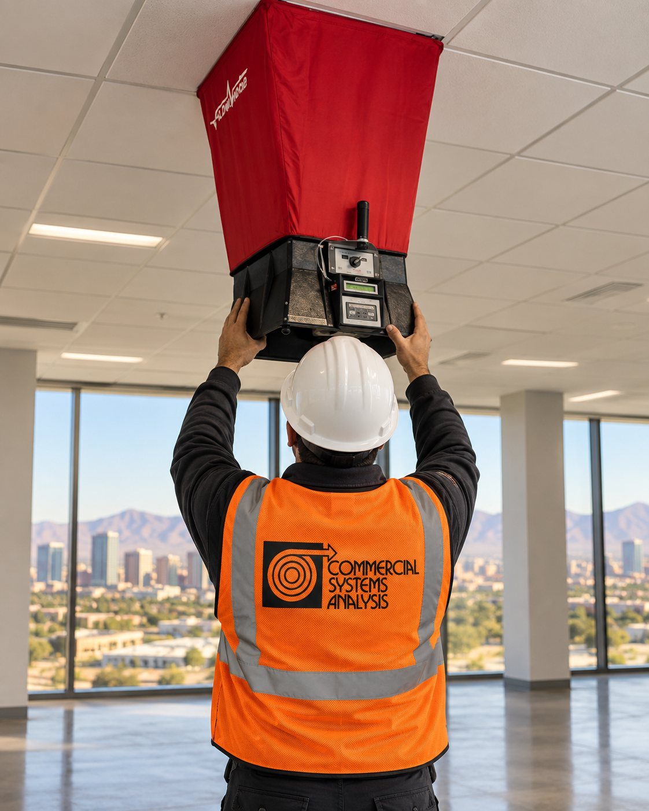
Every system we touch is tested against its design intent, adjusted with calibrated instrumentation, and documented in a certified report your engineers can build on.
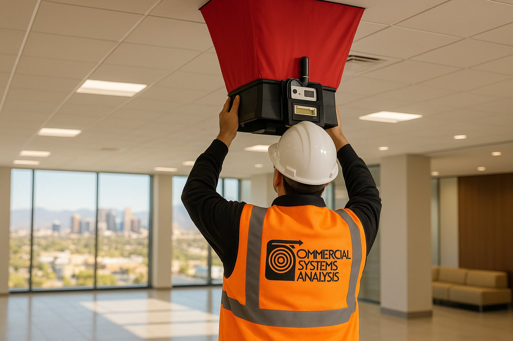
Using precision instrumentation, we test and adjust the air and water moving through your systems until they meet design specifications — cutting maintenance costs, extending equipment life, and driving down energy consumption.
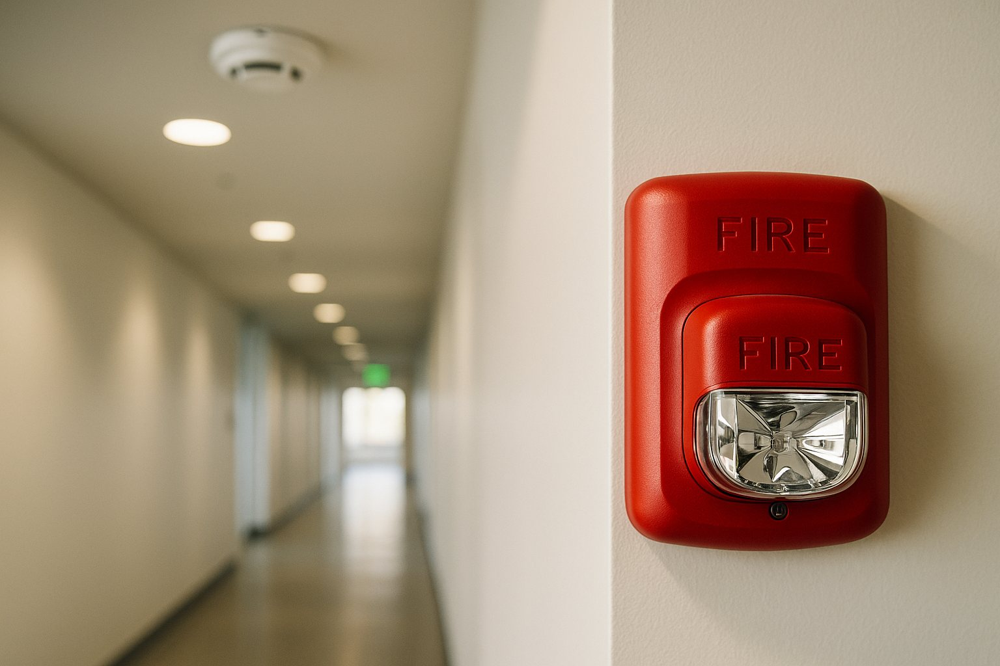
Thorough, certified testing of your life safety systems — verifying that detection and notification equipment will protect building occupants when an emergency strikes, with comprehensive inspection reports.
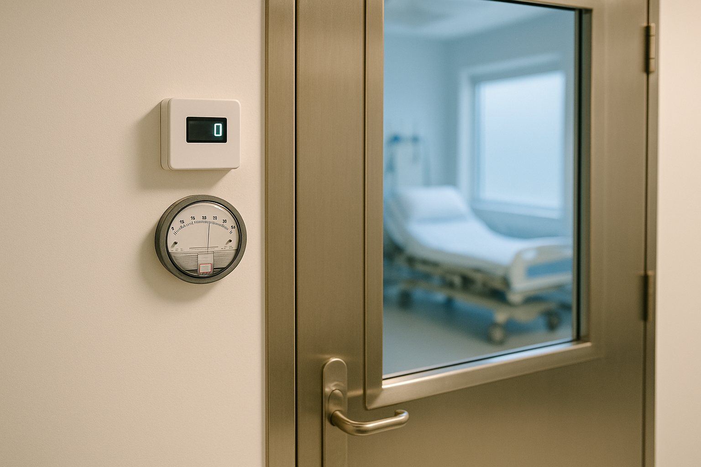
Operating rooms and critical care spaces demand annual certification. We verify pressure relationships, air changes per hour, and ventilation performance so your healthcare facility stays compliant and your patients stay protected.
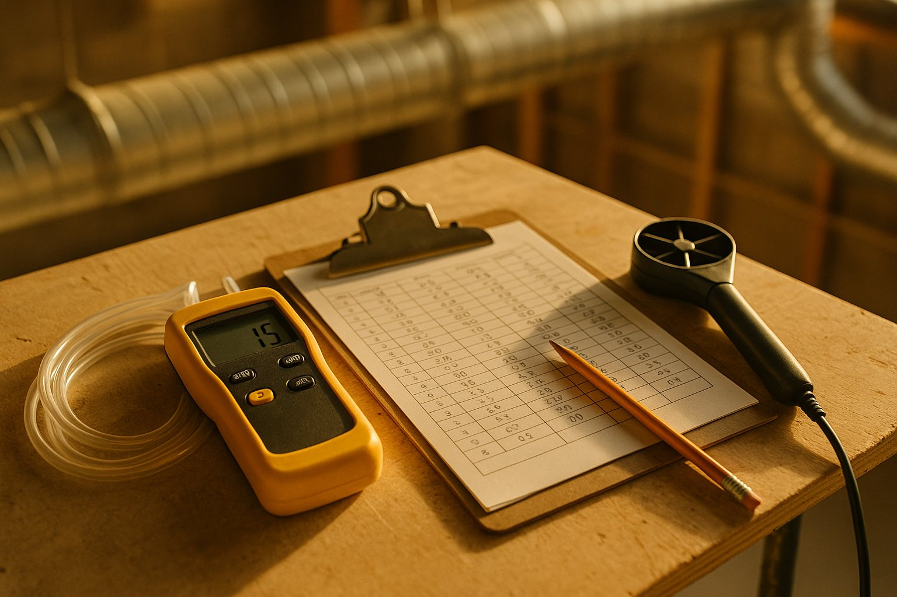
When a system underperforms, we find out why. Performance testing pinpoints the root cause, establishes true system capacities, and delivers engineered recommendations to restore efficiency.
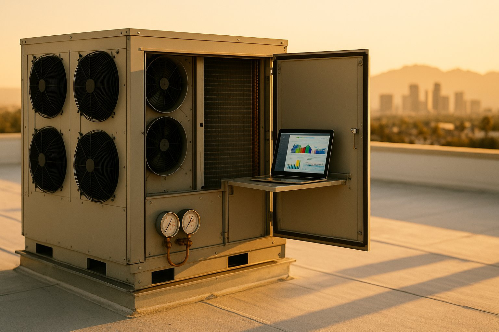
For new construction and existing buildings alike, we verify that every HVAC subsystem operates the way it was engineered to — protecting your investment and locking in energy performance from day one.
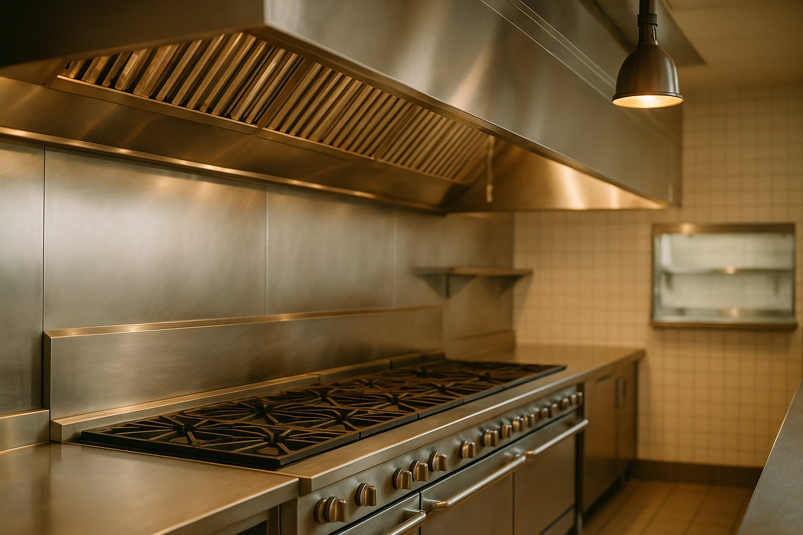
Commercial kitchen exhaust systems are tested end-to-end, including capture and containment assessment — keeping your kitchen safe, compliant, and performing at full strength.
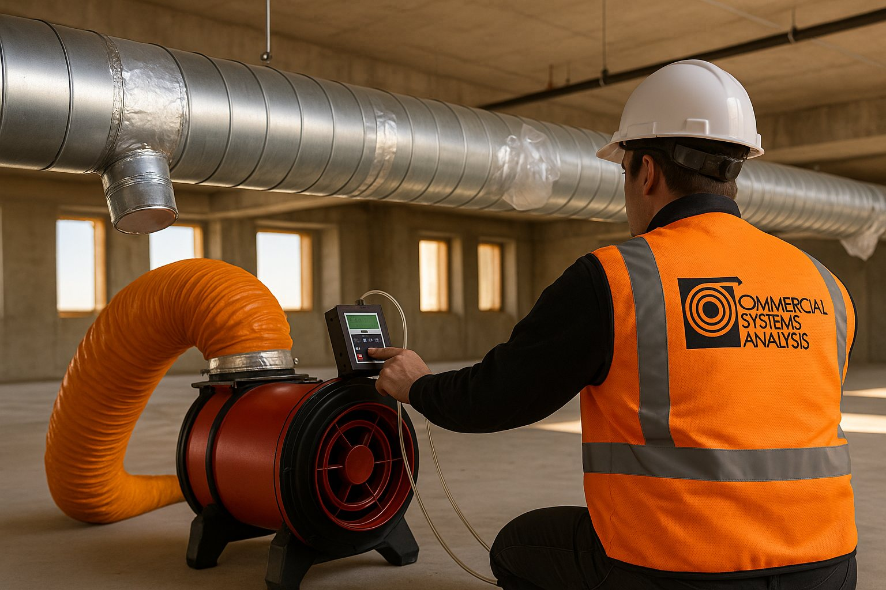
By pressurizing your ductwork, we prove whether it was installed and sealed correctly — verifying energy efficiency compliance and stopping conditioned air from disappearing into your ceiling.
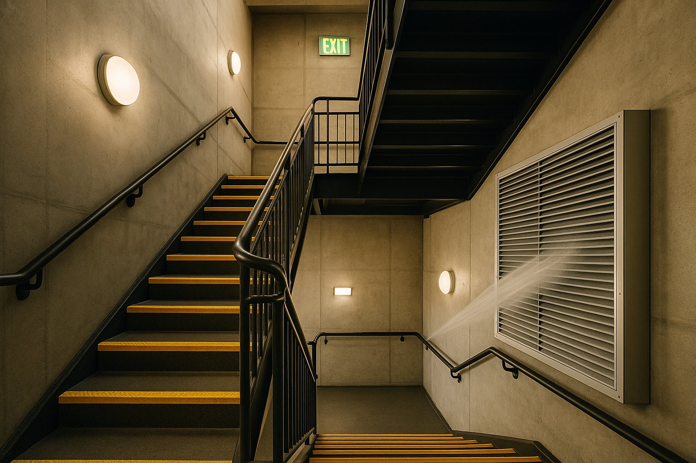
Required by code in high-rise buildings, pressurized stairwells keep exit routes smoke-free during a fire. We test pressurization performance and door operation so occupants can always get out.
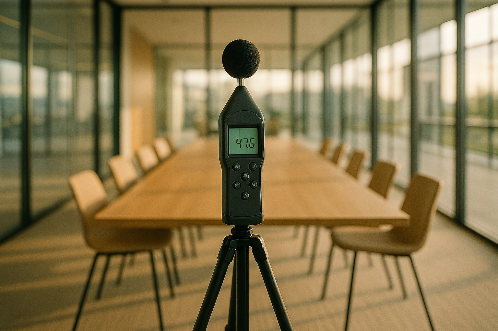
Mechanical systems should be felt in comfort, not heard in every room. We measure and document sound levels so your spaces meet their acoustic requirements.
A building that isn't properly balanced overworks its equipment, overspends on energy, and underdelivers on comfort — every single day. Proper testing and balancing pays for itself, then keeps paying.
The potential 20-year cost savings for a properly balanced 100,000 sq ft building:
Projected 20-Year Savings · 100,000 SQ FT Building
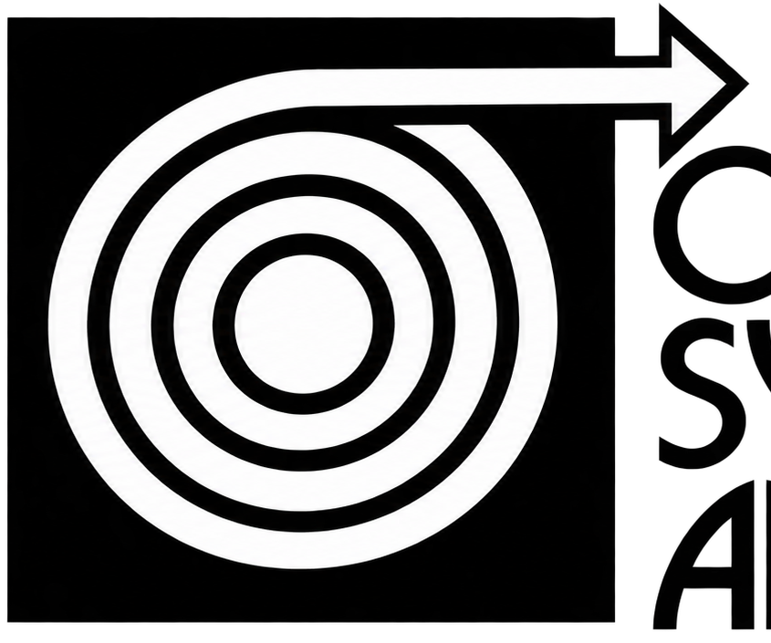
We study your mechanical drawings and design intent before a single instrument comes off the truck.
Calibrated instrumentation measures the air and water actually moving through the system — not what the drawings hope is moving.
Every terminal, damper, and valve is adjusted until the system performs to specification.
You receive complete, certified documentation — the record your engineers, inspectors, and owners can rely on.

Precision test & balance across one of the Valley's landmark waterfront office campuses.

Critical environment testing where pressure relationships and air changes protect lives.

Full-system air and water balance for Class A high-rise office space.

Campus-scale balancing for one of the nation's premier honors colleges.

Comfort and air quality engineered for the residents who depend on it most.

Public infrastructure held to public standards — tested and certified.
"It seems there is always someone willing to do the job cheaper and cut quality in the process… but when quality matters, the leaders in the industry call us."
— Commercial Systems Analysis, since 1986